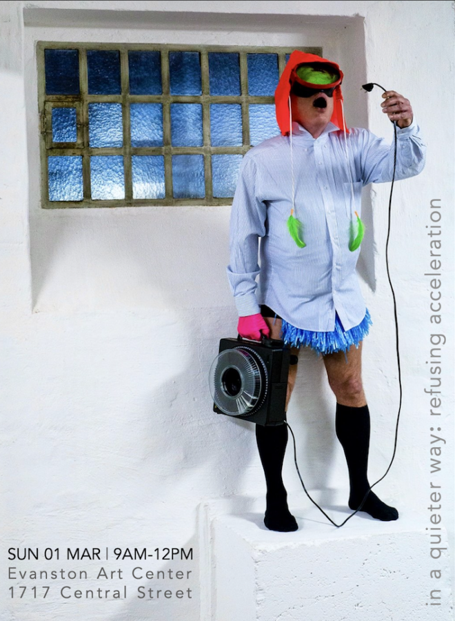

in a quieter way: a durational performance by joseph ravens
in a quieter way: refusing acceleration a durational performance by joseph ravens
The installation is a living archive and the body serves as a temporary index. A figure moves slowly. Marking and unmarking. Making and unmaking. Negotiating negative space. Extending and fragmenting across rigid structures and elastic time.
Duration is the spine of the work. Repetition makes time visible. Transformation emerges quietly because the performance refuses to hurry, inviting accidental viewers to catch fragments, moments, and shifts that might otherwise go unnoticed.
Grab a coffee at one of the charming cafés nearby and sit with the artist for a while to watch the work unfold over time. 🗓 SUN 01 MAR 2026 ⏰ 9AM to noon 📍 Evanston Art Center > 1717 Central St
This piece is part of CHOREOGRAPHIC PLACE by David Sundry, Michael Workman, and Michelle Kranicke. Resolutely architectural, the project exists between archive and performance installation. Defibrillator Performance Art Gallery is featured prominently. Open through March 15, with live activations throughout. Parking is available on site. The gallery is steps from the Central stop on the Metra UP-N line.
IMAGE: Joseph Ravens | Sea Inside Me | Curated by Marita Bullmann | Photo by Thomas Reul | Marie Wolfgang Gallery | Essen, Germany, 2022